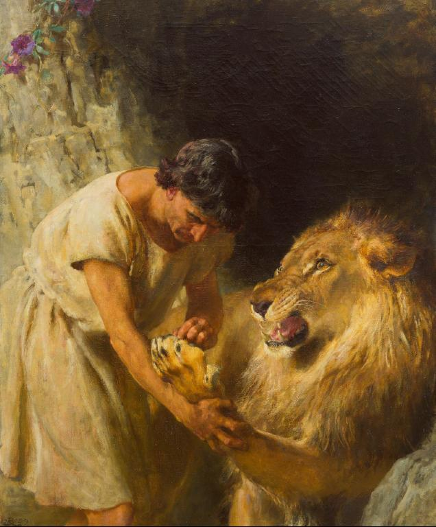

Androcles

A slave named Androcles
once escaped from his master and fled to the forest.
As he was wandering about there
he came upon a lion lying down moaning and groaning.
At first he turned to flee,
but finding that the lion did not pursue him,
he turned back and went up to him.
As he come near,
the lion put out his paw,
which was all swollen and bleeding
and found that a huge thorn had got into it,
and was causing all the pain.
He pulled out the torn
and bound up the paw of the lion,
who was soon able to rise
and lick the hand of Androcles like a dog.
Then the lion took Androcles to his cave,
and every day used to bring him meat from which to live
But shortly afterwards
both Androcles and the lion were captured.
and the slave was sentenced to be thrown to the lion,
after the latter had been kept without food for several days.
The Emperor and all his court
came to see the spectacle,
and Androcles was led out into the middle of the arena.
Soon the lion was let loose from his den
and rushed bounding and roaring toward its victim
But as soon as he come near to Androcles
he recognized his friend,
and fawned upon him,
and licked his hands like a friendly dog,
The Emperor, surprised at his,
summoned Androcles to him,
who told him the whole story.
Whereupon the slave was pardoned and freed,
and the lion let loose to his native forest.